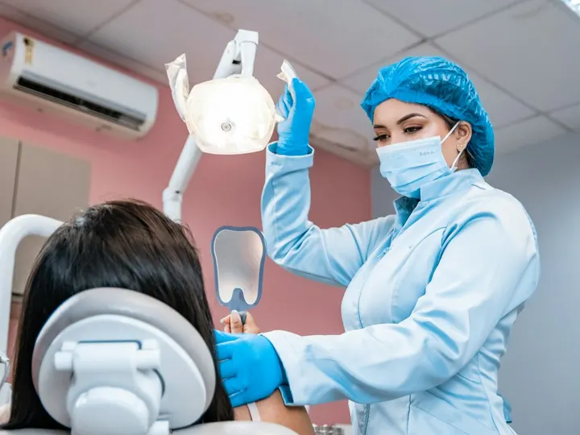
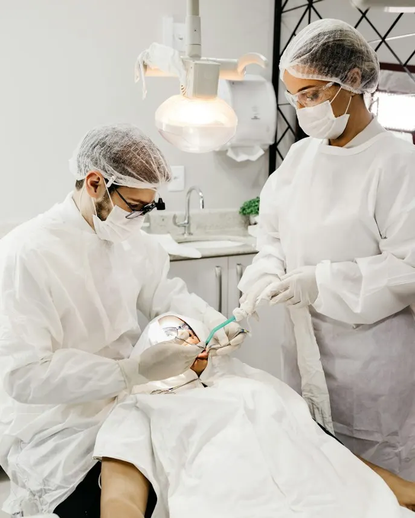
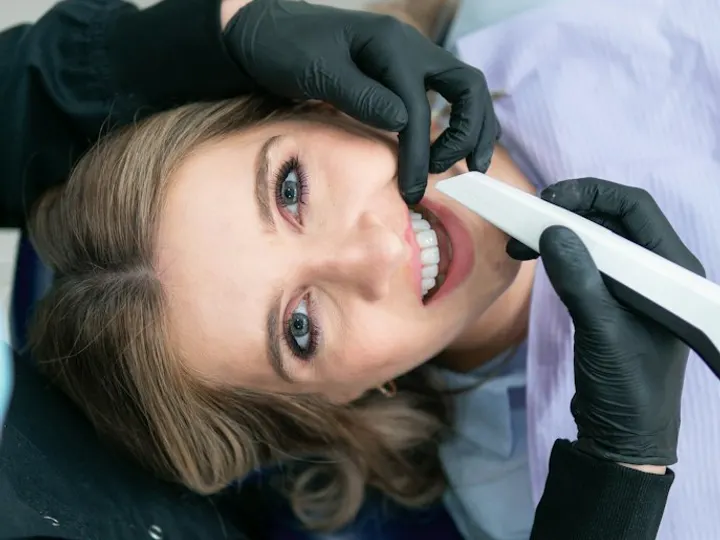
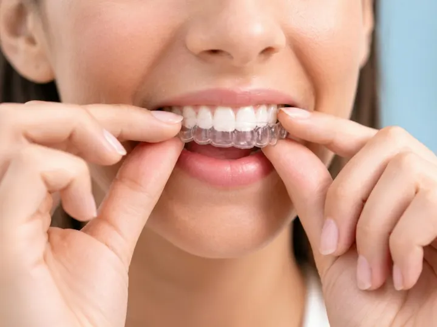
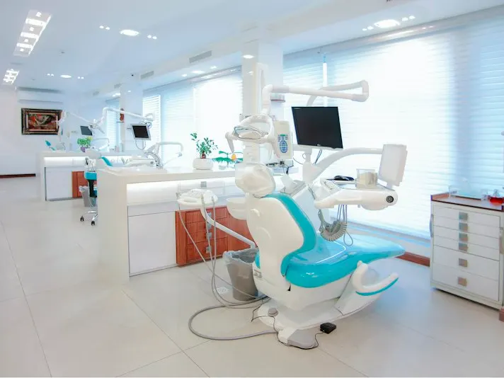

Lentes de ResinaFechamento de diastema e forma
Harmonização estética conservadora realizada sem desgaste invasivo de esmalte sadio.
Tratamentos odontológicos e estéticos de alta precisão conduzidos por cirurgiões-dentistas especialistas nos Jardins. Protocolo de conforto do início ao fim.

Dra. Camila Torres
Responsável técnica · CRO-SP 00.000
Casos clínicos conduzidos pela nossa equipe combinando alinhamento estético e recuperação mastigatória funcional.

Lentes de ResinaHarmonização estética conservadora realizada sem desgaste invasivo de esmalte sadio.

Reabilitação OralRecuperação de função com cerâmica de alta densidade e cirurgia guiada por tomografia 3D.

Alinhador InvisívelCorreção funcional e estética completa utilizando alinhadores transparentes removíveis.
*Imagens ilustrativas, usadas apenas nesta demonstração. Em um site real, os casos exibidos precisam ser autorizados e os resultados variam de acordo com as características anatômicas de cada paciente (Resolução CFO 196/2019).
Clique no procedimento desejado para tirar dúvidas específicas com nossa equipe.
Recupere a mastigação sem insegurança. Procedimentos com tomografia 3D e cirurgia minimamente invasiva.
Consultar Implante →Correção de cor, formato e proporção do sorriso em poucas sessões, preservando a integridade original do dente.
Consultar Lentes →Aparelhos transparentes e removíveis. Alinhe os dentes com previsibilidade digital e discrição absoluta.
Consultar Alinhador →Preenchimentos, toxina botulínica e bioestimuladores com foco em elegância anatômica e resultado sutil.
Consultar Harmonização →
Esqueça salas de espera cheias e tratamentos impessoais. Na Lúmina unimos comodidade, tecnologia e pontualidade.
Elimina as moldagens de massa desconfortáveis. Seu sorriso é mapeado digitalmente em poucos minutos.
Sedação consciente leve e anestesia computadorizada sem dor para uma experiência sem ansiedade.
O mesmo especialista acompanha todo o seu ciclo de tratamento com suporte direto por WhatsApp.
"Fiz as lentes com receio de ficar artificial e o resultado ficou extremamente natural. Toda a equipe explicou cada etapa antes de começar."
"Adiei o implante por anos por fobia de agulha e dor. A sedação foi impecável, não senti absolutamente nada durante o processo."
"Usei o alinhador durante reuniões executivas e ninguém notava. Acompanhamento pontual sem atrasos na recepção."
*Avaliações ilustrativas, criadas para esta demonstração.
Não. Utilizamos anestesia local computadorizada, que dosa a pressão e reduz significativamente o desconforto. Para pacientes com receio ou ansiedade, disponibilizamos sedação leve.
O valor varia conforme a estrutura óssea e o estado dos dentes. Na consulta inicial entregamos um planejamento com orçamento transparente e parcelamento em até 12x.
Trabalhamos na modalidade particular para manter insumos importados e tempo integral dedicado a cada paciente, emitindo nota e laudo para reembolso junto ao seu plano.
Estamos na Rua Oscar Freire, 1245 (conjunto 82), no coração dos Jardins, com serviço de manobrista no local.
Nosso plantão de atendimento no WhatsApp está online para encontrar o melhor dia e horário para sua visita.
Falar com a Equipe pelo WhatsApp